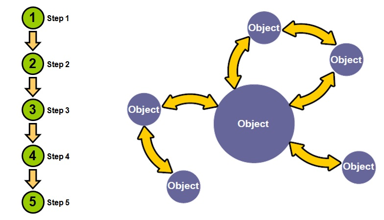

Programación Orientada a Objetos
Paradigmas de Programación
Clase
Es una plantilla desde la cuál se crearan objetos, define el estado (atributos) y comportamiento (métodos) que poseeran los objetos que se creen a partir de esta plantilla.
Objeto
Es la instancia de una clase, posee una copia de los atributos (de instancia) definidos en la clase.
Clase vs Objeto
Objetos:
- Elementos con comportamiento y estado. Métodos y atributos concretos
- Instancias de clase
- Interactuan por medio de mensajes
Clases
class Persona {
String nombre;
String apellido;
void caminar(int pasos);
}
Persona per1 = new Persona();
per1.nombre = "Juan";
per1.apellido = "Carrión";
Persona per2 = new Persona();
per2.nombre = "Fabio";
per2.apellio = "Arias";
per1.caminar(2);
per2.caminar(3);
Abstracción
Podemos definir la abstracción como una operación intelectual que separa las cualidades de un objeto para considerarlas aisladamente o para analizar al objeto en su pura esencia o noción.
Gracias a la abstracción podemos representar las características esenciales (dependiendo del contexto) de un objeto sin preocuparnos de las restantes características (no esenciales).
// Abstrayendo la clase Cliente para un sistema
// de aprobación de préstamos
class Cliente {
String dni;
String nombre;
String apellido;
double sueldo;
boolean poseePropiedades;
}
// Abstrayendo la clase Cliente (Alumno) para un sistema
// de matricula universitaria
class Cliente {
String dni;
String nombre;
String apellido;
String codigoUniversitario;
int codigoFacultad;
}
Encapsulamiento
Es el ocultamiento del estado (atributos) del objeto, de manera que solo se pueda modificar este estado mediante las operaciones definidas para ese objeto.
| Modificador | Clase | Paquete | Subclases | Mundo |
|---|---|---|---|---|
public |
Y | Y | Y | Y |
protected |
Y | Y | Y | N |
| Sin modificador | Y | Y | N | N |
private |
Y | N | N | N |
public class Factura {
private Date fecha;
private double montoTotal;
public void anadirProducto(Producto producto) {
montoTotal += producto.monto;
}
}
Getters y Setters
Métodos estandar para definir la lectura (get) y escritura (set) sobre los atributos de una clase.
public class Automovil {
private int numeroLlantas; // Solo lectura
private double combustibleDisponible; // Lectura y escritura
public int getNumeroLlantas() {
return numeroLlantas;
}
public double getCombustibleDisponible() {
return combustibleDisponible;
}
public void setCombustibleDisponible(double combustible) {
combustibleDisponible = combustible;
}
}
Constructores
public class Empleado {
private String dni;
private String nombreCompleto;
private int numeroHijos;
private Empleado jefe;
public Empleado(String dni, String nombreCompleto) {
this.dni = dni;
this.nombreCompleto = nombreCompleto;
}
// getters and setters
}
Empleado emp = new Empleado("15264578", "Adriano");
Empleado emp = new Empleado("58469253", "David");
public class Empresa {
}
Empresa emp = new Empresa();
System.exit(0);